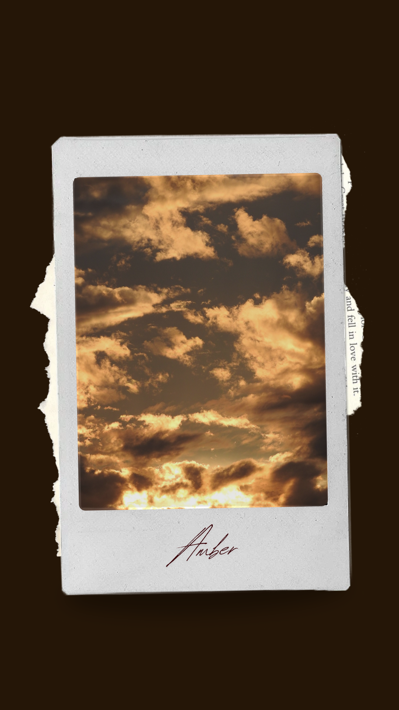
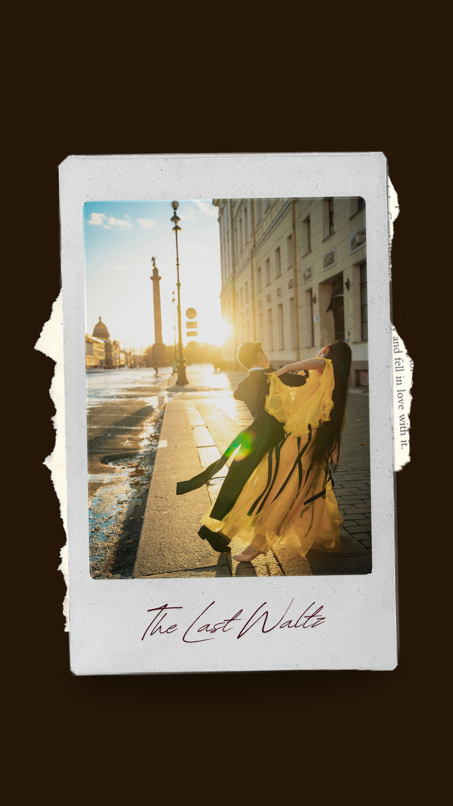
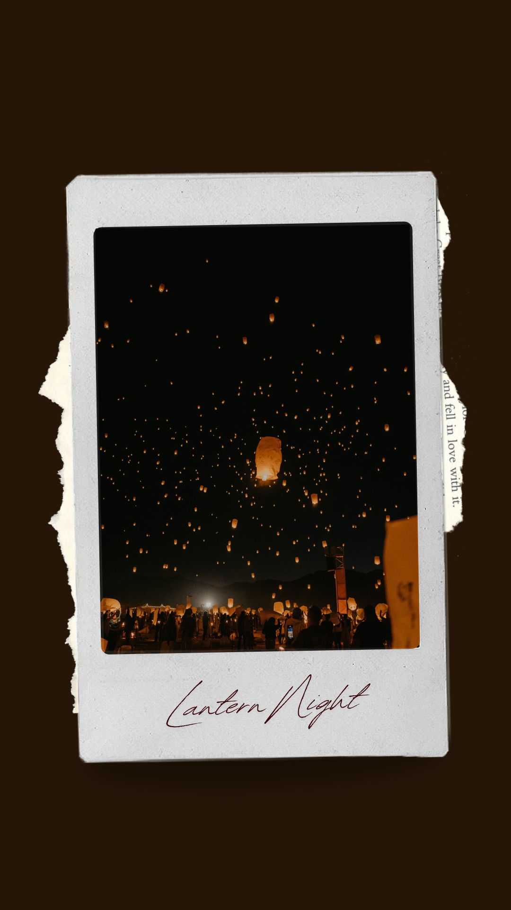
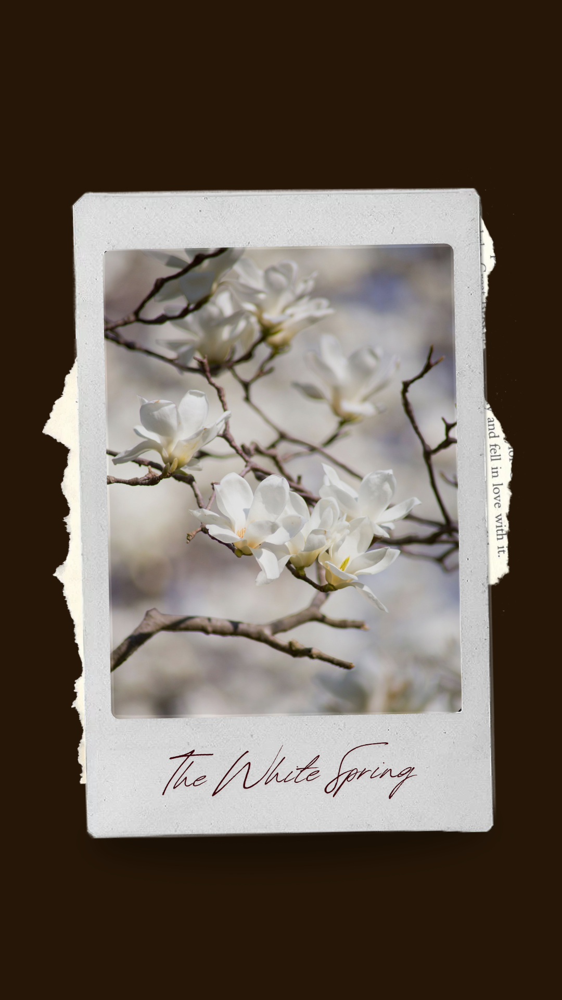

Date Recovered: 18th of Solstice-Peak, Unknown Era
Archive Classification: Masonry Record
It was a news came at peaceful morning, according to the Rashburn news association, or atleast what they told the public, was the Ashborn mother will decendend upon us after 5 centuries. To the future generation, this ment that they no longer can fly free nor fill their lives with liberal meaning.
But to think that Ashborn were returning after such a short period of time was concerning,
some would say that this news is false while others concluded it a part of Obernius' plan,
whatever it was, I could not know, since that was the last thig i heard before leaving the Rashburn city.
Mob gathered all around the Amber sky to witness the decend of Ashburn, even if filled with fear we all knew that there was nothing we could do to stop this,
an hour passed, then another, then another, nothing happened?
I now lay on my death bed, wondering if it was all fake or a dream
for what I remember of my life, the day sky turned Amber, I was no longer free.
Date Recovered: 2nd of Midwinter, Year of the Iron Lily
Archive Classification: Audio-Cylinder / Restored Acoustic Tapestry
Wandering around my house for a while, I found a diary written in a language I could not understand, I set it aside for I had other matter to tend to.
Wandering in the street, a dance performer couple I saw, displaying thier beautiful waltz, in a tonal rythem and ancient glory in each step, it was beautiful.
Ashborn, a name i randomly heard from the couple who were done with their waltz, "Ashborn is upon us" said the two in sync.
The rain started to pour suddenly with gold red tint, what was happening was nothing more than coincedience I thought.
Returning home I opened the same book, which I could read now, "Liberal life is at its end." the same line repeating throughout the pages.
I now lay in my grave, I will soon be out of breath and die, but just once I wish to know, what was the meaning of this life?
For I could not remember the day my life never went according to my wish,
It was like... I was never free.


Date Recovered: 5th of Frost-Fall, Year of the Shattered Crown
Archive Classification: Civic Chronicle / Commemorative Log
A poignant, multi-perspective chronicle detailing the night of the Great Vigil, observed the exact evening the Eternal Monarch mysteriously abdicated the throne. Without a word of explanation to the High Council, the sovereign simply detached the crown, left it resting upon the empty velvet dais, and walked unprotected into the depths of the Whispering Woods, never to return. In a quiet display of mourning and devotion, every single household in the capital placed a hand-blown glass lantern upon their windowsill, fueled by a rare oil that burned a brilliant, deep violet.
By midnight, the sprawling metropolis resembled a vast constellation fallen directly to earth. The silence across the capital was absolute. Not a single steam carriage moved, the tavern hearths grew cold, and even the local fauna seemed to hold their breath out of respect for the passing of an epoch. It was the final night the city stood completely united, just before the bitter factional wars began to fracture its golden age.
Date Recovered: 18th of Solstice-Peak, Unknown Era
Archive Classification: Architectural Survey / Masonry Record
A fascinating archival report from the master stonemasons working deep beneath the foundations of the Central Library. While attempting to clear a blocked structural archway, the laborers breached a false brick wall concealed behind a rotting historical tapestry, stumbling into a pristine, glowing subterranean grotto. At its heart lay a natural spring bubbling with liquid silver.
The substance defied all known properties of metallurgy; it was cool to the touch and left no residue on skin or velvet, yet anyone who imbibed even a single drop found themselves physically incapable of speaking in anything but perfect, rhyming verse for the subsequent twenty-four hours. The spring was hastily sealed under strict royal decree three days later to prevent utter chaos within the royal courts, but the whimsical, poetic sonnets etched into the wooden scaffolding by the original construction crew remain perfectly preserved to this day.
